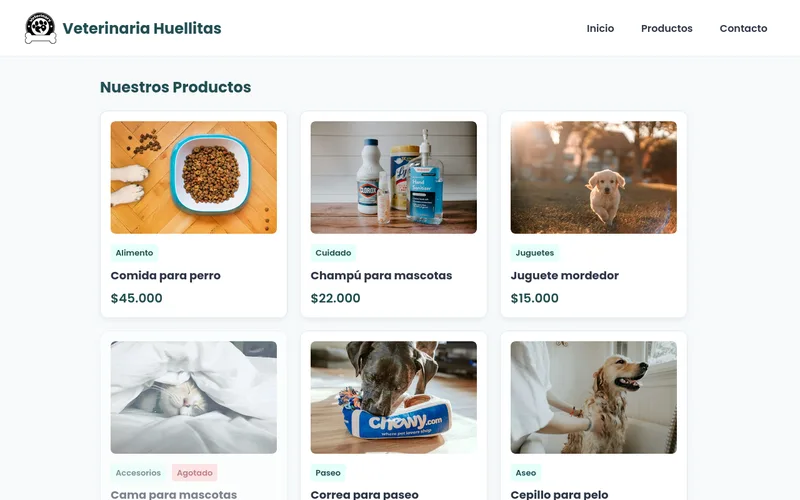
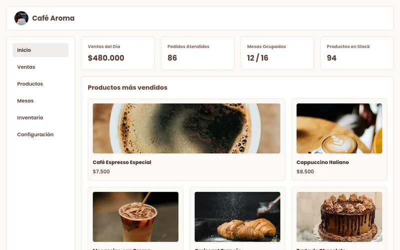
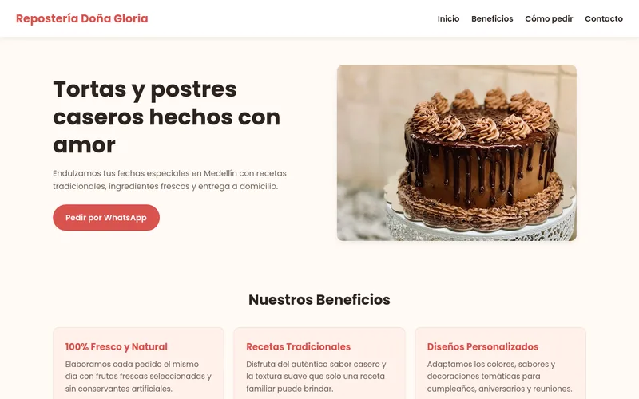
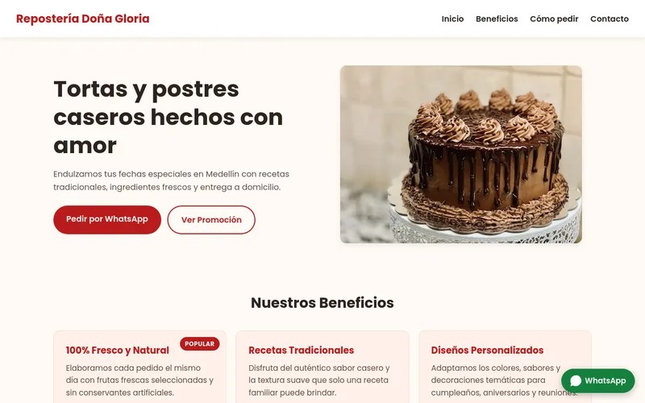

Juan Perez
Desarrollador Web Junior | Aprendiz ADSO - SENA CTMA
"El fracaso es solo la oportunidad de comenzar de nuevo de forma más inteligente"
Sobre mí
Soy aprendiz de Análisis y Desarrollo de Software (ADSO) en el SENA CTMA, Medellín. Me apasiona el desarrollo web y la creación de interfaces limpias, adaptables y accesibles utilizando estándares modernos de HTML5, CSS3 y JavaScript.
A lo largo de mi formación he construido diversos proyectos aplicando metodologías Mobile First, Flexbox, CSS Grid y optimización SEO.
Proyectos Destacados



Contacto
¿Te interesa colaborar o conocer más sobre mis proyectos? Puedes comunicarte conmigo a través de: